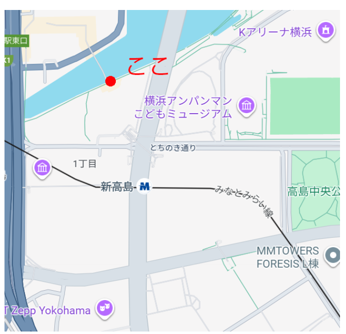
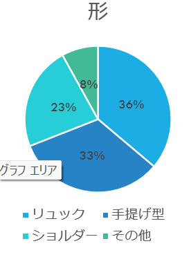
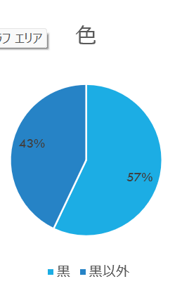

観察対象
バックの形と色
観察項目
形
- リュック
- ショルダー
- 手提げ型
- それ以外（手ぶら、キャリー、スクールバックなどその他）
色
- 黒
- 黒以外
判別に関して
- 基本的に形で判断
- 複数の使い方ができる場合その時の使い方でカウント
- 複数持っている場合はすべてカウント
（例：リュック＋トートバッグ）
観察場所
定点観察
はまみらいウォーク日産側

予想
平日の日中でサラリーマンが多く形は手提げ型、色は黒が多いと考えられる。
定点結果(観察10分間)
形
リュック153
手提げ型139
ショルダー97
それ以外34

色
黒202
黒以外152

結果（全体）
予想とは反してサラリーマンだけでなく家族連れも多く、スーツケースを持っている人も多かった。
サラリーマンは手提げが主流というイメージがあったが、リュックの人も多かった。
これにはスマホの普及で移動中にスマホを操作することが原因だと考えられる。